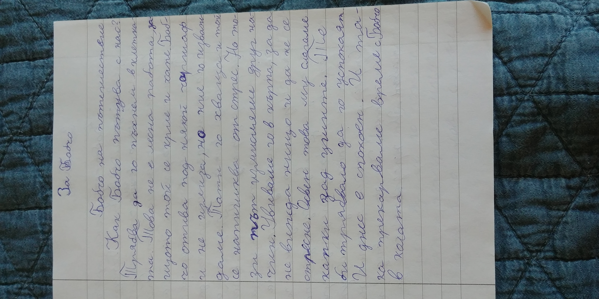
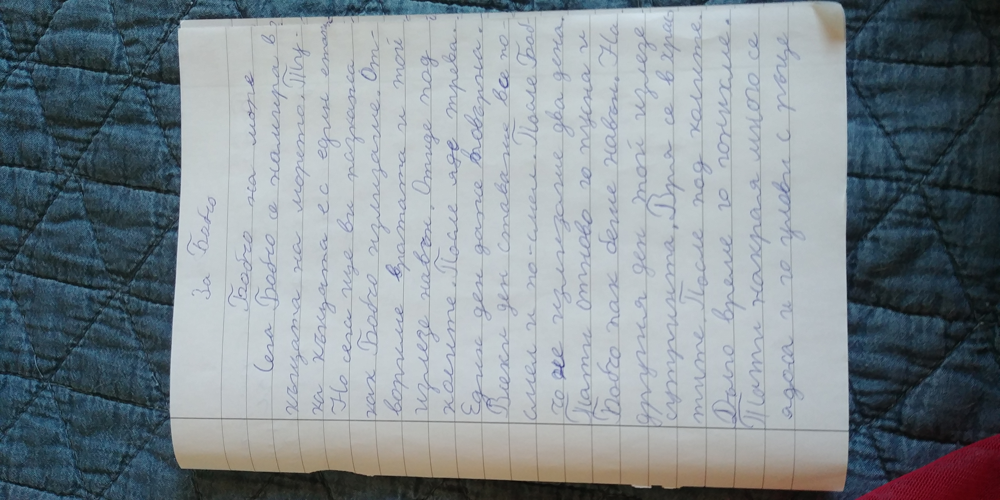

Бобчо на пътешествие
Как Бобчо пътува с нас? Трябва да го пъхнем в клетката. Това не е проста работа, защото той се крие и хапе. Бобчо отива под някой чаршаф и
не излиза, но ние го изваждаме. Тати го хваща и той се напишква от стрес. Но този път измислихме друг начин. Увиваме го в кърпа, за да не
вижда нищо и да не се стресне. Освен това му слагаме капка до ушите. Те би трябвало да го успокоят. И днес е спокоен. И така прекарваме време
с Бобчо в колата.

Бобчо-сърдечни трепети
Заведохме Бобчо в Божурище. В началото беше изплашен. Криеше се под мивката. После се кри под чаршафите на леглата. През нощта се разхождаше
и ядеше. Но един ден той започна да се разхожда в хола. А друг ден отиде до прозореца. Понеже в Божурище има много котки, те усещаха, че в
нашата къща също има котка. Незнам, но според мен и Бобчо ги усеща. Един ден, докато вечеряхме, Бобчо отиде до прозореца и започна да мяука.
Според мен там имаше някаква котка. Но не се видя нищо навън. И продължихме да ядем.

Бобчо на море
Сега Бобчо се намира в къщата на морето. Тук къщата е с един етаж. Но сега ще ви разкажа как Бобчо излиза. Отворим ли вратата и той
излиза навън. Отива под колите. После яде трева. Един ден даже повърна. Всеки ден ставаше все по-смел и по-смел. После Бобчо не излизаше
два дена. Тати отново го пусна и Бобчо отново беше навън. На другия ден той излезе сутринта. Вря се в храстите. После под колите. Дълго
време го гонихме. Тати накрая се ядоса и го улови с ръце. Бобчо го одраска по ръката и по лицето. И заради това, ние го наказахме
като повече не го пуснахме навън.
